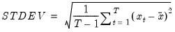

@stdev Sample standard deviation (d.f. adjusted). Square root of sample (d.f. adjusted) Pearson product moment variance. Syntax: @stdev(x, [s]) x: series, vector, matrix s: (optional) sample string or object when x is a series and assigning to a series Return: number The sample standard deviation is calculated as  where is the mean of . For series calculations, EViews will use the current or specified workfile sample. Examples If x = @nrnd, then = @stdev(x) returns a value near 1 in large samples. Cross-references See also @stdevp, @stdevs, and @var.


 is the mean of
is the mean of  .
.